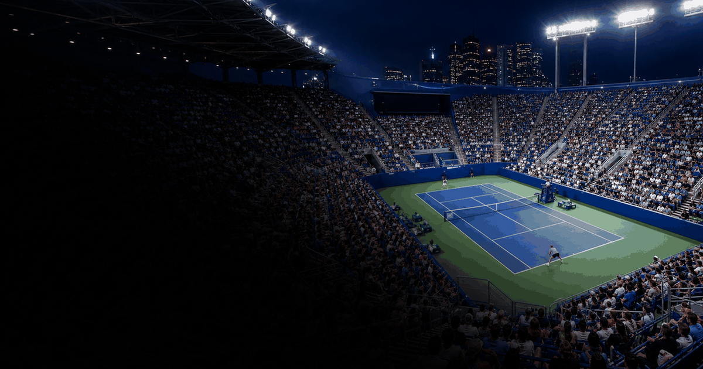

Tennis event guide
US Open Tennis
A compact OneSliders guide to US Open Tennis: what it is, how the current edition works and which moments matter most.
 More TennisInterested in more Tennis?
More TennisInterested in more Tennis?Explore related events, places and calendar moments.
US Open Tennis is tracked as an evergreen event so the general guide stays stable while the year slide changes over time.
The year slide holds dates, place and practical questions. The stages slide breaks the event into the main visitor or viewing moments.
For sports events, the general slide should explain the competition while the year slide carries selected-year entrants, schedule and results.
- Selected editions belong on the year slide.
- Past editions should show winners or performance context when verified.
- Parts should be rounds, stages or sessions, not generic labels.
| Year | Men's champion | Women's champion |
|---|---|---|
| 2024 | Jannik Sinner | Aryna Sabalenka |
| 2023 | Novak Djokovic | Coco Gauff |
| 2022 | Carlos Alcaraz | Iga Swiatek |
| 2021 | Daniil Medvedev | Emma Raducanu |
Edition guide
US Open Tennis 2026
Choose an edition; only this slide changes.
Dates and programme details should be checked close to the event.
Dates are carried from the current OneSliders event listing.
Host context:  USA.
USA.
Check the organiser and city transport pages before travel.
Ticket windows and resale rules vary by edition.
Use the stages slide for rounds, sessions or deciding parts.
This edition is still upcoming.